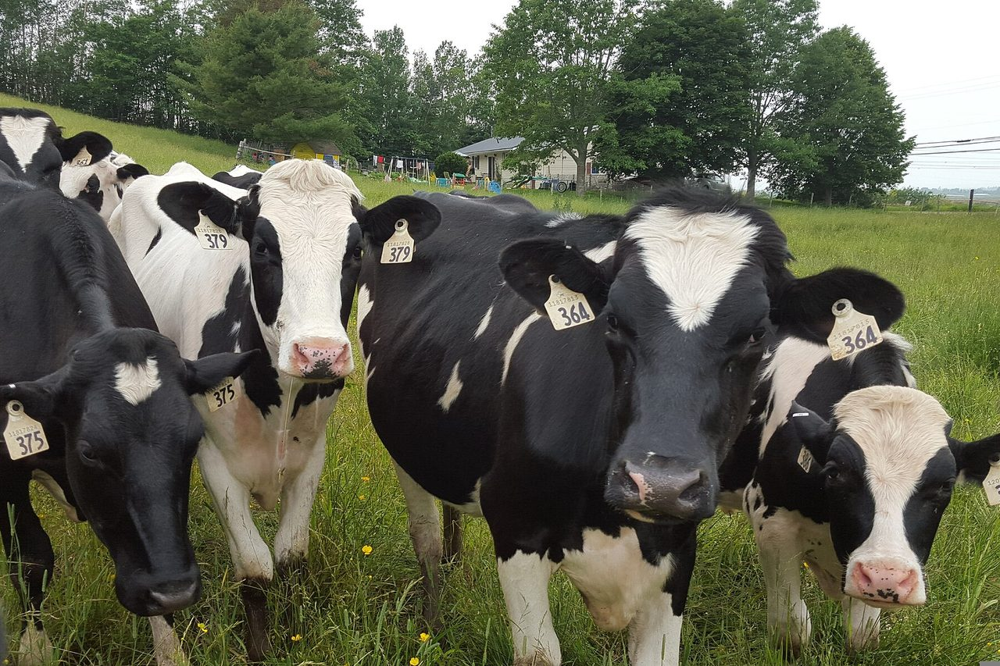
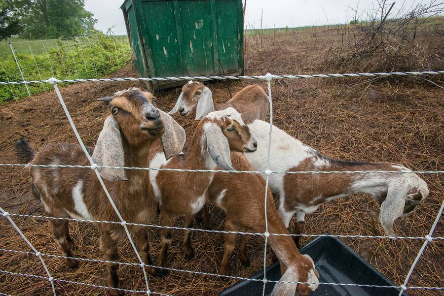
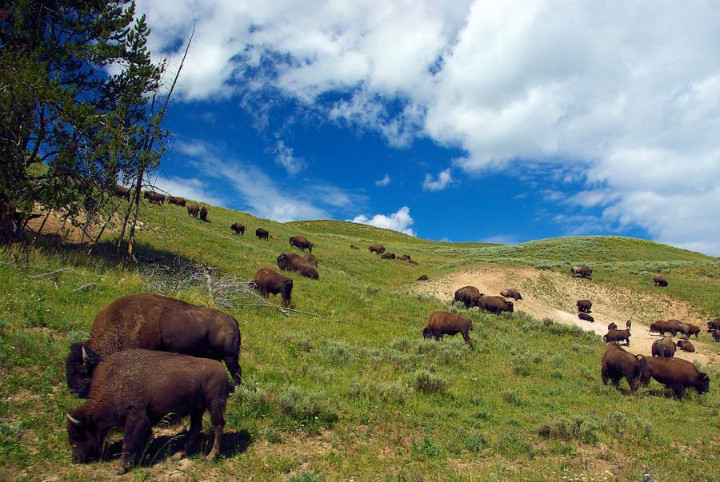
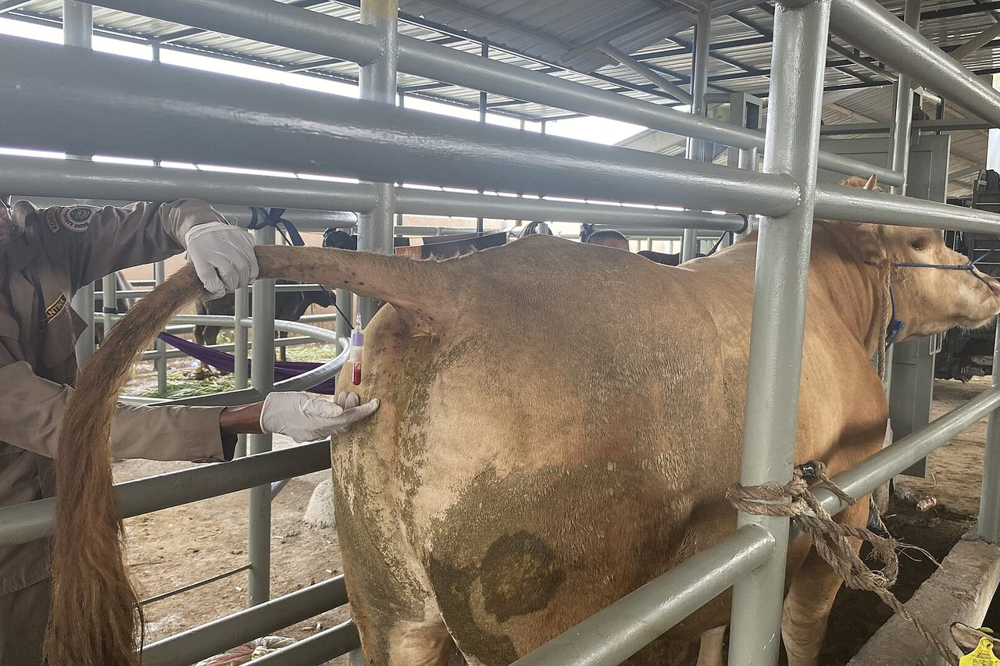

BioPRYN® Blood Pregnancy Testing
You don't milk your cows by hand anymore. Now you don't have to pregnancy check them the old way either. BioPRYN is a safe, accurate and inexpensive blood test for pregnancy in cattle, bison, goats and sheep.
Why blood testing
Safe
A small (2cc) sample of blood, drawn 28 days or more after breeding, is all that is required to run the pregnancy assay. Blood sampling is safer than either palpation or ultrasound, and every bit as dependable.
With BioPRYN, no embryo or uterine touching is required, eliminating this possible cause of pregnancy damage and loss. Unlike rectal techniques, using single-use blood collection needles for pregnancy diagnostics eliminates disease transmission between herd mates. Cows also appear less apprehensive about blood sampling than about rectal palpation, which makes the job safer for the person drawing the sample.
Ready to draw samples? See how to tail bleed a cow.
BioPRYN is a registered trademark of BioTracking, LLC.
The science
Accurate

The Enzyme-Linked Immuno-Sorbent Assay (ELISA) laboratory process detects the presence of a protein called Pregnancy Specific Protein B (PSPB). PSPB is produced by the developing placenta and begins circulating in the blood of pregnant cattle as early as 3 weeks of gestation. The test waits until 28 days so the level is high enough to call with confidence. Since non-pregnant animals will not have this protein in their blood, the test is more than 99% accurate in detecting open cows (BioTracking's published figure).
This high accuracy of open detection gives the test a wide safety margin over older progesterone-based tests. With less than a 1% error rate in open detection, the test is as dependable as palpation or ultrasound of early pregnancies, and safer for the cow.
In addition, Early Embryonic Death (EED) can sometimes be detected by the blood test, since subnormal levels of PSPB may indicate a pregnancy in trouble.

Pricing
Inexpensive
28-Day Cattle/Bison Pregnancy Test
$3.50 per test
Goat & Sheep Pregnancy Test
$7.00 per test
Volume pricing is available. Call (715) 653-2201 for a quote on your herd size.
Every result runs on the BioPRYN platform.
Heifers
Heifers from 25 days
Virgin heifers can be tested 25 days after breeding, three days earlier than cows. That makes blood testing the natural fit for heifers raised off-site: the grower's crew draws the samples on a day the heifers are already in the chute, and nobody has to schedule a veterinary visit to a lot two hours away. Open heifers go back on the breeding list before the next cycle.

Goats and sheep
Goats and sheep from 30 days

Wisconsin milks more goats than any other state, and this lab sits in the middle of it. Goats and sheep test from the same 2cc blood sample as cattle, drawn from the jugular vein, from 30 days after breeding, on the Small Ruminant Pregnancy Test Form. Most goat and sheep herds breed in the fall and check through the winter. Every result is read by the veterinarian.
Bison
Bison, without the chute fight

The assay is validated in bison at the same price as cattle. Draw when the animals are already in the handling system, mail the tubes, and skip the palpation.
Large herds
Large herds and heifer growers
For herds sampling in volume, the week runs like this: draw Monday and ship the same day, so the tubes land by Wednesday. The report is back Thursday, in time to put open animals on next week's protocol. Results come back by email, fax or phone, whichever you mark on the form. Call (715) 653-2201 for a quote on your herd size. A quote covers the per-head rate at your volume and the supplies you want shipped with your first order.
Getting started
How to get started
First, select cows at least 90 days since calving and 28 or more days from their last breeding (virgin heifers from 25 days, goats and sheep from 30). Samples can be collected with a syringe and needle or with the vacuum tube system.
Ready to draw samples? See how to tail bleed a cow. Goats and sheep are drawn from the jugular vein instead; your veterinarian can show your crew once and they can take it from there.
Using a new needle for each cow, draw 2cc of whole blood into a new red-top tube clearly labeled with the animal ID. Package tubes in padding for safe delivery, then see our shipping instructions and download the test form to mail in with your blood sample.

Plan a draw
When can I test?
Cows and bison can be sampled 28 days after breeding, virgin heifers at 25, goats and sheep at 30. Samples that reach the lab by Wednesday are reported that Thursday.
Reading the report
Pregnant, open, or recheck
BioPRYN reports each animal as pregnant, open, or recheck. A recheck means the reading fell between the two ranges. It can point to a pregnancy in trouble, an animal sampled too early, or a cow still too close to calving. Every plate is read by the veterinarian, and a recheck usually comes with a note on when to sample her again.
| Tube | Animal ID | Result | What it means |
|---|---|---|---|
| 1 | 4412 | Pregnant | Protein present. Keep her on the pregnant list. |
| 2 | 4418 | Open | No protein. Back on next week's breeding list. |
| 3 | 4425 | Recheck | Between the ranges. Dr. Pearson notes when to sample her again. |
| 4 | 4431 | Pregnant |
Forms
Download your submission form
Learn how you can adopt this and other technologies to increase your herd's profitability through improved reproductive management. Call us at (715) 653-2201 or email us for more information.